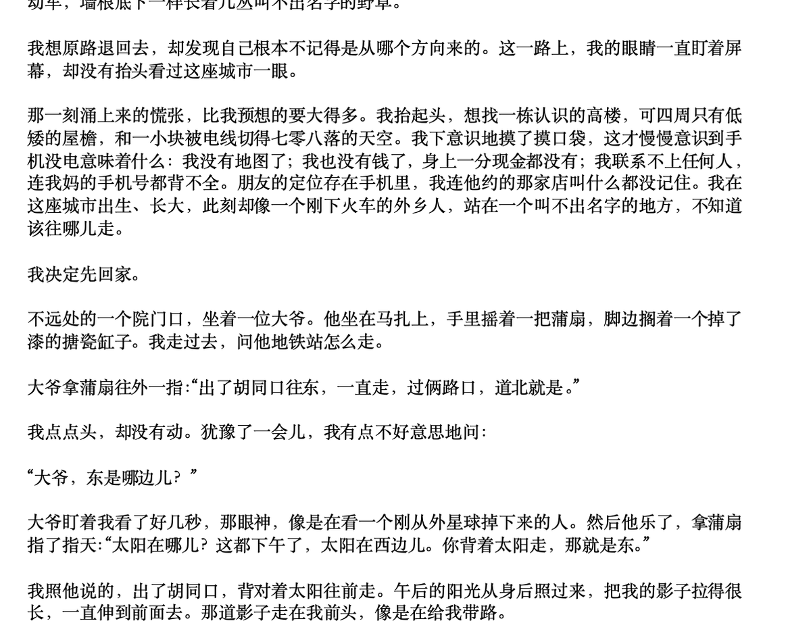

这个CF运输船是真的还原，我想Opus5.5开始，反而是独立游戏开发者弯道超车的机会
当年小鸡词典如果有Claude，就不会被新浪抄到破产，以这迭代速度未来AI酒馆衍生的乙游市场会很火，特别是恋与制作人这类的游戏很快会有替代
未来是否能看到孙悟空大战钢铁侠，人人都可以捏想玩的游戏，DIY4399指日可待

当年小鸡词典如果有Claude，就不会被新浪抄到破产，以这迭代速度未来AI酒馆衍生的乙游市场会很火，特别是恋与制作人这类的游戏很快会有替代
未来是否能看到孙悟空大战钢铁侠，人人都可以捏想玩的游戏，DIY4399指日可待

我非常遗憾地宣布，Opus5.5 王朝了。。。
首先是Coding的新高度（在这个价位），有一堆做游戏的Case大家肯定也都看了，没看的来这里⬇️
QQ飞车：https://t.co/Xw0fQpp4K3
穿越火线之运输船 : https://t.co/rZcHPXhRok
鹈鹕骑自行车: https://t.co/suTCKLUy9E
而且写作能力回来了，虽然有点GPT口癖（ https://t.co/vQNIpZ33tn
首先是Coding的新高度（在这个价位），有一堆做游戏的Case大家肯定也都看了，没看的来这里⬇️
QQ飞车：https://t.co/Xw0fQpp4K3
穿越火线之运输船 : https://t.co/rZcHPXhRok
鹈鹕骑自行车: https://t.co/suTCKLUy9E
而且写作能力回来了，虽然有点GPT口癖（ https://t.co/vQNIpZ33tn